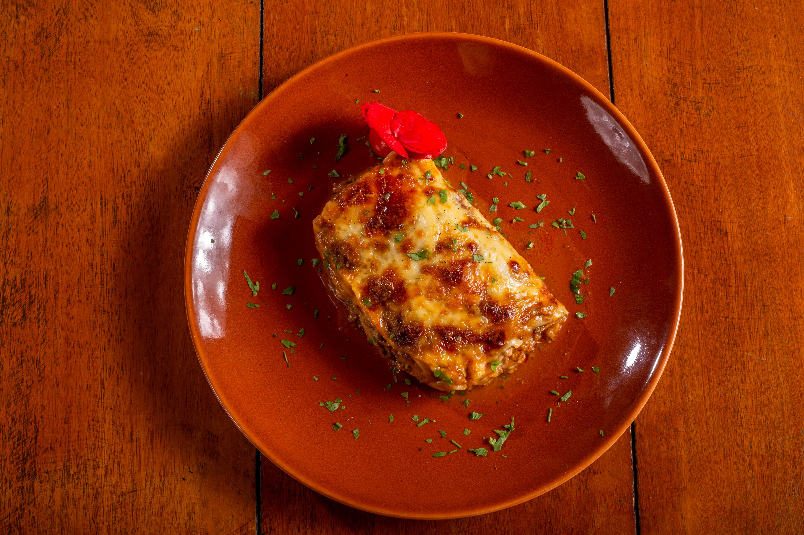

Lasagna
Home

Description
This classic lasagna recipe is made with layers of rich meat sauce, creamy cheese, and perfectly cooked pasta sheets.
If you have never tried a homemade one before, that needs to change.And this is exactly where this recipe becomes your guide.
Ingredients
- 9 lasagna noodles (unbroken)
- 1 lb ground beef
- 2 cups ricotta cheese
- 3 cups mozzarella cheese
- 2 cups marinara sauce
Steps
- Boil the lasagna noodles according to package instructions.
- Brown the ground beef in a skillet and mix with marinara sauce.
- Layer noodles, meat sauce, ricotta, and mozzarella in a baking dish.
- Bake at 375°F (190°C) for 45 minutes until bubbly and golden brown.